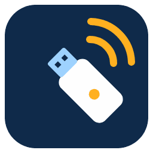

Zigbee-координатор на ESP32-C6 для Home Assistant
C6 Zigbee Stick превращает обычную плату ESP32-C6 в Zigbee-координатор. Прошейте её с этой страницы, вставьте в Home Assistant, и интеграция сама найдёт стик и настроит Zigbee2MQTT. Без терминала и YAML.
1. Прошейте ESP32-C6 из браузера
Подключите плату к компьютеру USB-кабелем с передачей данных (к разъёму USB, а не UART) и нажмите кнопку. Работает в Chrome и Edge на компьютере.
Прошивка: esp-coordinator 1.5.80 (стек Espressif ZBOSS, NCP по USB) без изменений. Память платы будет полностью стёрта.
2. Добавьте интеграцию через HACS
Один раз на Home Assistant: откройте репозиторий в HACS кнопкой ниже (или добавьте https://github.com/f1devbin/c6-zigbee-stick как пользовательский репозиторий типа «Интеграция»), установите «C6 Zigbee Stick» и перезапустите Home Assistant.
3. Вставьте стик в Home Assistant
В «Настройки → Устройства и службы» появится карточка «Обнаружено: C6 Zigbee Stick». Нажмите «Добавить»: интеграция установит и запустит Zigbee2MQTT (и брокер Mosquitto, если MQTT ещё нет), направит его на стик и перезапустит, если стик переподключить. Затем добавляйте устройства в Zigbee2MQTT кнопкой «Разрешить подключение».
Подходящие платы
Любая плата ESP32-C6, у которой USB-разъём подключён к встроенному USB чипа: ESP32-C6-DevKitC-1, ESP32-C6-DevKitM-1, Seeed Studio XIAO ESP32C6, WeAct ESP32-C6 и подобные. На платах с двумя разъёмами используйте подписанный USB, а не UART или COM.
Вопросы и ответы
Может ли ESP32-C6 быть Zigbee-координатором?
Да. В ESP32-C6 есть радио IEEE 802.15.4. Со стеком Espressif ZBOSS в режиме сетевого сопроцессора плата работает координатором, а Zigbee2MQTT управляет ей через адаптер zboss.
Работает ли с ZHA?
Пока нет: встроенный ZHA в Home Assistant не поддерживает ZBOSS, поэтому интеграция использует Zigbee2MQTT.
Зачем Home Assistant отдельная интеграция?
Покупные стики распознаются по имени в USB-дескрипторе. Все ESP32-C6 показывают один и тот же неизменяемый дескриптор (303a:1001, «USB JTAG/serial debug unit»), поэтому интеграция сначала спрашивает плату по протоколу ZBOSS, действительно ли это координатор.
Какие ограничения?
Адаптер zboss в Zigbee2MQTT помечен как экспериментальный: смена канала требует заново подключить устройства, резервные копии сети, install codes и touchlink пока не поддерживаются.